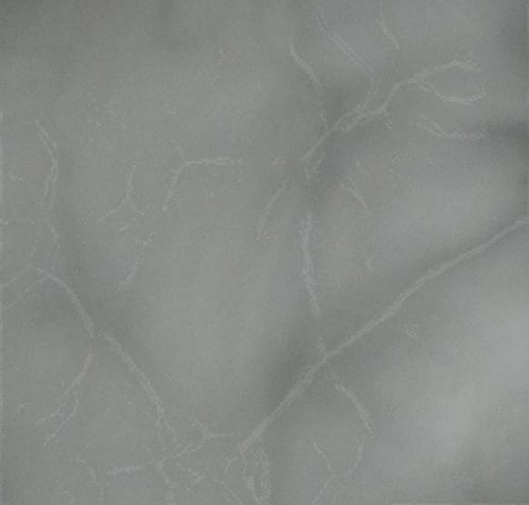

Palm vein authentication is the process of using an individual's vein pattern to
identify who they are.
Despite not being very well known, it has the potential to become one of the best forms of biometric
authentication.
It's:
-
Contactless. A big plus for public settings like banks and hospitals.
-
Reliable. There are millions of identifiable points and regions in a vein pattern.
-
Difficult to impersonate. Even identical twins have different vein patterns.
However, one of the main drawbacks right now is the cost
(sensors are currently selling for
$400+).
Here's how to make a simple but accurate one for under $90 using a Raspberry Pi, OpenCV, and TensorFlow.
What You'll Need
Step 1: Getting a vein image
The first step is getting an image to work with - but how can we get an accurate picture of veins?
Turns out, the hemoglobin in our blood absorbs infrared light (see below). Under the right conditions,
if we take some infrared LEDs and position them under one's hand, we should be able to get a vein image!
The naked eye won't see anything since infrared lies
outside of the visual spectrum, which is why we'll use the RaspberryPi NoIR camera module.
Now, we need a setup where we can get a consistent image every time. Some variables we
should control:
-
Lighting - we want the IR light to be unobstructed
-
Height of palm above camera - this depends on the focal length of your camera
-
Position/orientation of palm in the image
While prototyping, an ordinary shoebox with a palm-sized hole cut out above the camera worked perfectly for
me.

Just a regular shoebox
When I remade this project using an actual door, I used a simple wooden box with a circle cut out for the
palm.
The circuitry is very simple - we just need to power the IR LEDs. I used 5 LEDs connected in series with a
100 ohm resistor (you may need a different resistance depending on your LEDs) and a 9V battery. The
RaspberryPi is on top of the breadboard, with the camera resting on the battery facing up.
Make sure you have a sturdy setup.
I taped down the breadboard and loose parts to the bottom of the
shoe box, but I suggest using something more secure, like zip ties.
Now, let's take an image:
Cool! A somewhat distinguishable vein pattern. Let's set up auto-cropping, as we're only concerned with the
palm. This is the command I used to produce a 600x600 image (you'll want it to be square).
raspistill -vf -w 600 -h 600 -roi 0.46,0.34,0.25,0.25 -o pic.jpg
Those 4 coordinates,
(0.46, 0.34, 0.25, 0.25), define the
ROI
(region of interest). Yours will vary based on
the positioning of the camera - it takes some trial and error, which is why you don't want your setup to move
around.

Post-crop image
Now we have this isolated image of our palm. Next, we need to perform some image processing before we can
actually make use of it.
Step 2: Image Processing
First, install
OpenCV on your Pi. Then, let's load the image and convert it to
grayscale.
# Load the 600x600 image and convert to grayscale
img = cv2.imread("pic.jpg")
gray = cv2.cvtColor(img, cv2.COLOR_BGR2GRAY)
Let's start by reducing some of the noise. Luckily, OpenCV has a function for that:
noiseReduced = cv2.fastNlMeansDenoising(gray)

After image denoising
Much smoother. Now, we need to increase the contrast to really make the veins stand out. The method I used
was
histogram
equalization. This distributes the intensities of the pixels in the image, "equalizing" the
histogram. We then invert the image, since many OpenCV functions assume the background is black and
foreground is white.
# Histogram Equalization
kernel = np.ones((7,7),np.uint8)
img = cv2.morphologyEx(noiseReduced, cv2.MORPH_OPEN, kernel)
img_yuv = cv2.cvtColor(img, cv2.COLOR_BGR2YUV)
img_yuv[:,:,0] = cv2.equalizeHist(img_yuv[:,:,0])
img_output = cv2.cvtColor(img_yuv, cv2.COLOR_YUV2BGR)
After histogram equalization and inversion
That made quite a big difference. A lot of the "skin" is gone (now black), with the vein pattern being
largely white. It's still not quite ready yet - there's a lot of redundant data in this image.
Erosion is a technique used to strip away outer layers of data in images. For example, if we want to
"thin"
an image of the letter j using erosion:
Similarly, we want to do this with the vein image. Let's "skeletonize" it, using repeated erosion.
img = gray.copy()
skel = img.copy()
skel[:,:] = 0
kernel = cv2.getStructuringElement(cv2.MORPH_CROSS, (5,5))
while cv2.countNonZero(img) > 0:
eroded = cv2.morphologyEx(img, cv2.MORPH_ERODE, kernel)
temp = cv2.morphologyEx(eroded, cv2.MORPH_DILATE, kernel)
temp = cv2.subtract(img, temp)
skel = cv2.bitwise_or(skel, temp)
img[:,:] = eroded[:,:]
After skeletonization (repeated erosion)
Now we're talking! I applied a quick threshold to make the veins more visible. Every pixel which is 5 or
higher
(everything very dark gray or lighter) will become 255 (white).
ret, thr = cv2.threshold(skel, 5,255, cv2.THRESH_BINARY);
To see how accurate this was, I overlayed the vein pattern over the original image to see if there was a
correlation.

The result overlayed on the original image
It's looking good! Not perfect, but it should be more than good enough for our purposes.
Now we know how to extract the vein pattern given an image of a palm. The next step is authentication.
Step 3: Authentication
To be able to authenticate, you'll need
TensorFlow installed. We'll be using a basic classification method.
I didn't have access to any public palm-vein data upon completing this project, so my variation was to
authenticate between multiple hands instead (which I could provide training data for myself). So, instead of
authenticating between my hand and any other random hand, the model will authenticate between multiple
pre-trained hands (I used my left and my right). The code is the same, just the training data varies.
To start, we need sets of training data. I took 40 total photos for my right and left palms (20 each), and
processed all of the images to get the vein patterns.
Let's throw these images in a model. train_images will be a numpy array of
images represented as 2d pixel
arrays. train_labels will be the index of the correct image classification.
The i-th image in train_images
will have classification classes[train_labels[i]].
Finally, we normalize the images to be floats from 0 - 1 instead of 0 - 255.
classes = ["left", "right"]
num_right_train = 20
num_left_train = 20
# 1 for right, 0 for left
train_labels = np.array([1]*num_right_train + [0]*num_left_train)
train_images = np.array([])
for i in range(num_right_train):
pic = np.array(Image.open("images/right_thr" + str(i) + ".jpg"))
train_images = np.vstack((train_images, np.array([pic])))
for i in range(num_left_train):
pic = np.array(Image.open("images/left_thr" + str(i) + ".jpg"))
train_images = np.vstack((train_images, np.array([pic])))
train_images = train_images / 255.0
We're now ready to compile and train our model! We need the keras module from TensorFlow for this.
# Source: https://www.tensorflow.org/tutorials/keras/basic_classification
model = keras.Sequential([
keras.layers.Flatten(input_shape=(600, 600)), # dimensions of the image
keras.layers.Dense(64, activation=tf.nn.relu),
keras.layers.Dense(2, activation=tf.nn.softmax)
])
model.compile(optimizer=tf.train.AdamOptimizer(),
loss='sparse_categorical_crossentropy',
metrics=['accuracy'])
model.fit(train_images, train_labels, epochs=5)
Training took around 15 - 25 seconds for the 40 images. Now for the moment of truth - let's see if this
model is any good.
Step 4: Testing and Results
I took 30 more photos of my palms (15 left, 15 right) to use as test data.
I set up the test_images and test_labels
in the same way as the training data.
test_loss, test_acc = model.evaluate(test_images, test_labels)
print('Test accuracy: ', test_acc)
I surprisingly managed to get around 93% accuracy with this model.
I'm sure it can be significantly improved with a more training data, a higher quality camera, and better IR
LEDs. Regardless, I was satisfied to even extract the vein data, let alone get a high accuracy!
Final Thoughts
This project was inexpensive, unique, and a lot of fun! The remake of this project, using an actual door and locking mechanism,
won first place at Hack the North 2018.
I've gotten plenty of emails from others who have recreated this project themselves - get in touch if you do too! 😄